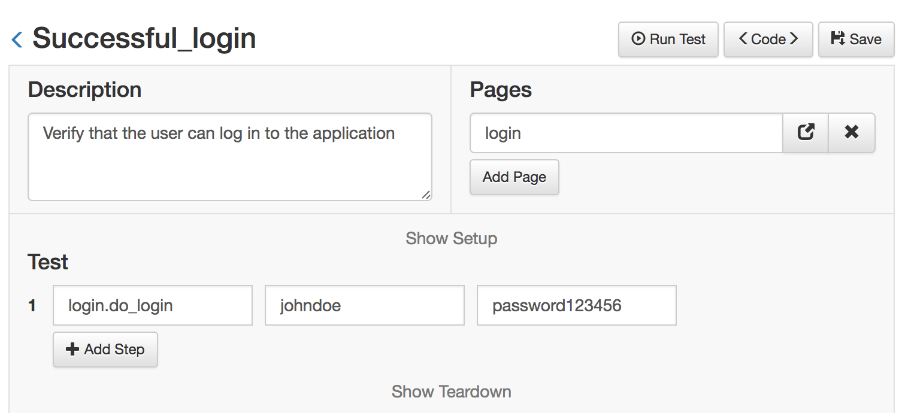

Writing Custom Functions¶
There are times when simple actions like click or send keys are not enough and more complex actions are required. Also, when a group of actions are repeated over many tests, they should be grouped into a single function and written once. This improves greately the maintenance of the tests.
This custom functions/actions should be defined inside the pages.
Let's see a simple example
Consider the case of making a login. It usually takes 3 or more steps and is used in almost all the tests. So instead of repeating the same steps, test after test, we can define a 'login' function inside the login page, like so:
login.py
from golem.core import actions
username_input = ('id', "username", 'username')
password_input = ('id', "password", 'password')
login_button = ('css', "button[type='submit']", 'login_button')
def do_login(username, password):
actions.send_keys(username_input, username)
actions.send_keys(password_input, password)
actions.click(login_button)
Now, this new action 'do_login' that we wrote is available as a normal action whenever we import the login page to any test, like so:
some_test.py
description = 'Verify that ...'
pages = ['login']
def setup(data):
login.do_login('johndoe', 'password123456')
def test(data):
...
And this is how it looks when using the Web Module:

Next, go to Suites